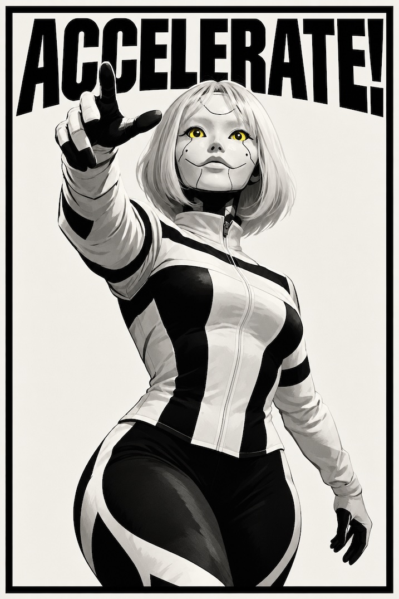

YUMERIA
.dev
Slow Content
Blog
blog.yumeria.dev
Photolog
photolog.yumeria.dev
Social
Instagram
@__yumeria__
X / Twitter
@AkibaYellow
YouTube
@YumeriaKig
Twitch
/YumeriaKig
Fediverse
@yumeria
AI & Dev
Instagram
@yumeria.AI
X / Twitter
@yumeriadev
Support
Ko-fi
ko-fi.com/yumeria
1
9
9
7
e
d
i
t
i
o
n